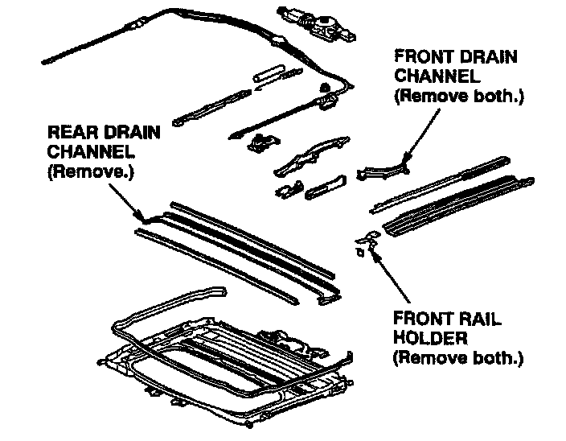
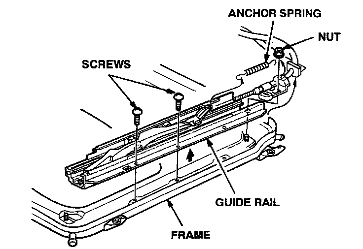
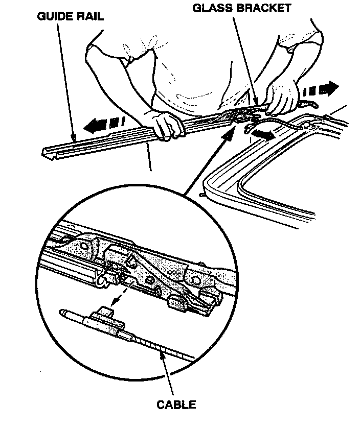
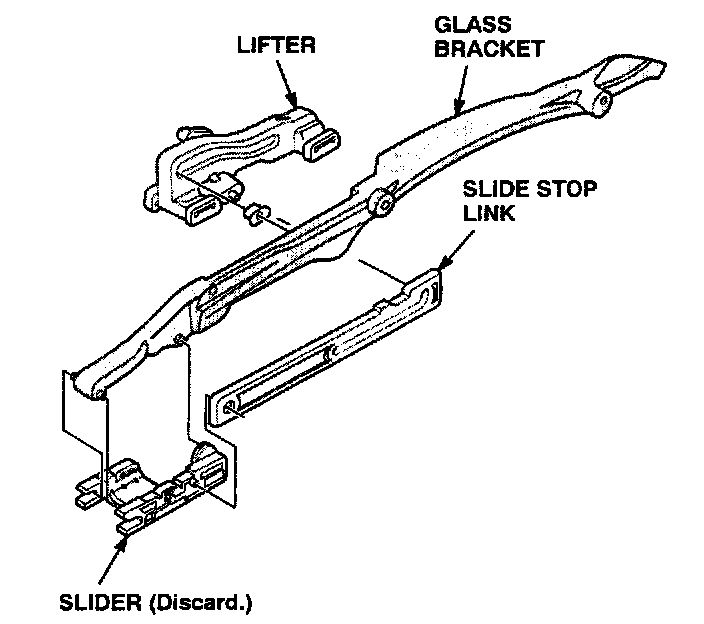
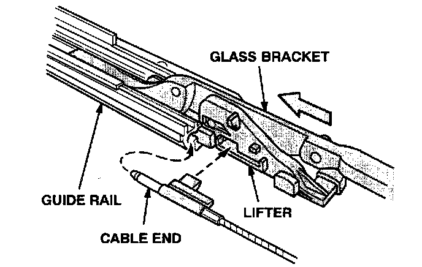

Body - Moonroof Chatters During Operation
94-017November 29, 1999
1994-95 Integra - LS, LSS, GS-R: ALL
1996 Integra - 3-door LS, LSS thru VIN JH4DC4...TS016529
- 3-door GS-R thru VIN JH4DC2...TS003974
- 4-door LS, LSS thru VIN JH4DB7...T5007511
- 4-door GS-R thru VIN JH4DB8...TS001505
Moonroof Chatter While Opening or Closing
(Supersedes 94-017, dated August 26, 1997)
** Indicates updated information **
PROBLEM
The moonroof chatters or shudders when it is opened or closed.
CORRECTIVE ACTION
Replace the moonroof sliders.
WARRANTY CLAIM INFORMATION
In warranty:
The normal warranty applies.
Operation number: 814010
** Flat rate time: 3.5 hours **
Failed P/N: 70338-5R3-013
Defect code: 030
Contention code: B07
Template ID: 94-017A
Skill level: Repair Technician
Out of warranty:
Any repair performed after warranty expiration may be eligible for goodwill consideration by the District Technical Manager or your Zone Office You must request consideration, and get a decision, before starting work.
PARTS INFORMATION
Moonroof Slider, Left: P/N 70338-SR3-013
Moonroof Slider, Right: P/N 70333-SR3-013
RECOMMENDED MATERIALS
Super High-Temp Urea Grease: P/N 08798-9002
(Warranty allows one jar for every 20 vehicles.)
REPAIR PROCEDURE
1. Remove the headliner, the moon root glass, and the moon roof frame assembly. Refer to section 20 of the appropriate service manual.
2. Lay a clean towel on a flat surface, and place the moon roof frame assembly on it.

3. Remove these parts from the moon roof frame:
^ Rear drain channel
^ Both front drain channels
^ Both front rail holders
4. Using the moonroof manual crank handle from the tool bag, manually turn the cable assembly until the glass bracket is half-way back

5. Remove the nut and the screws securing the guide rail to the moon roof frame.

6. While holding the glass bracket with one hand, lift and pull the guide rail away from the cable with your other hand.

7. Separate the lifter, glass bracket, slide stop link, and slider. Discard the old slider.
8. Lubricate the new slider and the guide rail with Super High-Temp Urea Grease.
9. Install the lifter, slide stop link, and slider onto the glass bracket. Slide the assembly into the guide rail.

10. Insert the end of the cable into the round end of the guide rail, and connect it to the lifter.
11. Position the guide rail on the moonroof frame, and reinstall the mounting nut and screws.
12. Repeat steps 5 thru 11 on the other side.
13. Reinstall all the parts removed from the moonroof frame assembly.
14. Reinstall the frame in the vehicle.
15. Install the moonroof glass, and check that the moonroof operates smoothly
16. Reinstall the headliner.

Disclaimer